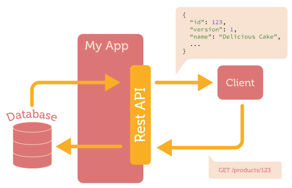

Дивный сказ о том кто такой GraphQL
Типичный Rest API
Основные неудобства/проблемы
-
Over-fetching
- Данных получили много, может это и хорошо, но мне они вроде как и не нужны и что с ними делать пока неизвестно
-
Under-fetching
- Опять получили данные, но как-то маловато, надо бы еще чуть-чуть но бэкендеры делать это естественно не хотят
-
Изменение (эволюционирование) API
- Версионирование
- Deprecation
- Поддержка
API Gateways

Подход GraphQL

GraphQL
- A data query language
- Developed by Facebook
- Used internally since 2012
- Open source version published in July 2015
- Relay released in August 2015
- Specification: https://facebook.github.io/graphql
Response Structure
query MyProduct {
product(id: 123) {
name
description
picture {
width
height
url
}
}
}
{
"data": {
"product": {
"name": "Delicious Cake",
"description": "Just taste it!"
"picture": {
"width": 150,
"height": 150,
"url": "http://..."
}
}
}
}
Every field Is a Function
query MyProduct {
products {
picture(size: 300) {
width, height, url
}
}
}
{
"data": {
"products": [
{
"picture": {
"width": 300,
"height": 300,
"url": "http://..."
}
},
...
]
}
}
Aliases
query MyProduct {
products {
thumb: picture(size: 100) {
width
}
fullSize: picture(size: 500) {
width
}
}
}
{
"data": {
"products": [
{
"thumb": {
"width": 100
},
"fullSize": {
"width": 500
}
},
...
]
}
}

Type System
type Picture {
width: Int!
height: Int!
url: String
}
type Query {
product(id: Int!): Product
products: [Product]
}
interface Identifiable {
id: String!
}
type Product implements Identifiable {
id: String!
name: String!
description: String
picture(size: Int): Picture
}
Mutations & Subscriptions
mutation ChangeStaff {
changeName(productId: 123, newName: "Cheesecake") {
id, version
}
setDescription(productId: 123, description: "Delicious!") {
id, version
}
}
subscription ProductEvents {
nameChanged(productId: 123) { name }
productDeleted { id }
}
Backend Agnostic

Languages

Example: JavaScript
var ProductType = new GraphQLObjectType({
name: "Product",
description: "Commodity available for purchase",
fields: {
id: {type: GraphQLString},
onStock: {
type: GraphQLInt,
resolve(product) {
return product.onStock + 10;
}
}
}
});